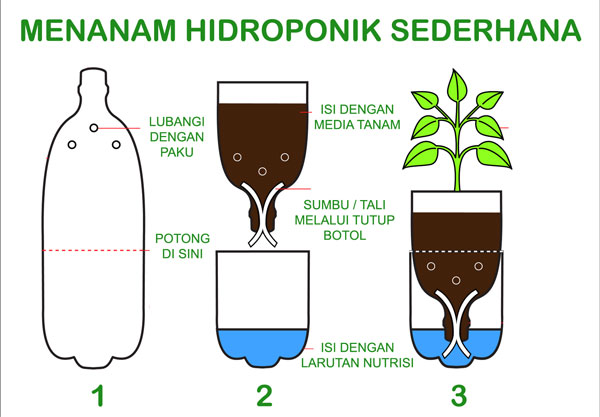
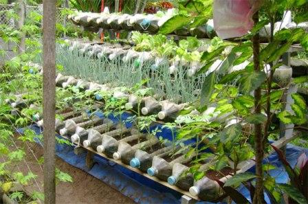

Solusi Lahan Sampah Semakin Menyempit
Selamat Pagi/Siang/Sore/Malam Sobat..!!!.
Eto...Tantangan yang pasti dihadapi para petani sekarang adalah berkurangnya lahan yang setiap tahun semakin menyempit. Berkurangnya lahan pertanian tersebut tiada lain untuk memenuhi kebutuhan perumahan dan industri, dikarenakan jumlah masyarakat yang semakin banyak.
Penanaman sayuran kini bisa dilakukan tanpa menggunakan media tanah karena penemuan metode tanam yang dikenal dengan HIDROPONIK artinya kegiatan bercocok tanam yang dilakukan tanpa tanah melainkan air yang mengandung nutrisi-nutrisi yang baik untuk pertumbuhan tanaman. Anda bisa menggunakan porus seperti sterofoam, pasir.
“Baca Juga : Solusi Banjir Rob”
Jenis Tanaman Hidroponik :
Pada umumnya, tanaman yang bisa menghasilkan hasil yang bagus dengan metode budidaya hidroponik adalah tanaman sayur daun.
Berikut ini beberapa contohnya:
1. Sawi hijau
Tanaman sawi merupakan salah satu kebutuhan pasar yang selalu meningkat, oleh karena itu banyak petani yang berfikir secara cerdas cara menanam sawi dalam jumlah banyak tapi tidak membutuhkan lahan yang luas. Timbullah cara menanam dengan metode hodroponik, jenis sawi yang cocok ditanam dengan metode hidroponik adalah sawi hijau.
2. Slada hijau
Tanaman yang satu bisa ditanam pada daerah ber-iklim sedang maupun tropis, karena masalah jumlah produksi yang kurang banyak petani beralih menanam slada hijau menggunakan metode hodrponik.
3. Buncis
Tanaman yang satu ini banyak mengandung gizi yang sangat luar biasa seperti protein nabati, vit A, vit B, dan vit C. Tanaman yang satu tidak sulit dibudidayakan oleh karena itu penanaman dapat dilakukan dengan metode hidroponik.
4. Pare
Tanaman berikutnya adalah pare, tanaman ini tumbuh merambat serta buahnya berwarna hijau kandungan vitaminnya sangat banyak diantaranya vit A, vit C, fosfor, dan zat besi. Oleh karena itu banyak petani yang melakukan budidaya menggunakan metode hidroponik.
5. Bayam
Bayam merupakan salah satu sayuran hijau yang sering sekali kita jumpai di berbagai tempat di Indonesia khususnya di setiap warung makan. Bayam memiliki kandungan gizi yang sangat luar biasa, tidak hanya vitamin akan tetapi bayam juga mengandung magnesium, kalsium, folat, protein, dan serat.
Keunggulan Hidroponik :
- Kelebihan bertanam menggunakan metode hidroponik yaitu penghematan biaya, karena kalian tidak harus melakukan penyiraman air kalian hanya perlu melakukan kontrol.
- Selanjutnya kalian tidak perlu lahan yang luas sebab penggunaan hidroponik hanya menggunakan lahan kecil meskipun jumlah tanaman berjumlah banyak.
- Dalam proses perawatan lebih ramah lingkungan sebab tidak perlu menggunakan obat hama atau pestisida Kelebihan berikutnya dari hidroponik tidak merusak tanah sebab media penanam sama sekali tidak menggunakan tanah Hasil tanaman terjamin kesehatan.
- Dapat memeriksa tanaman dalam keadaan sehat atau tidak dengan melihat akarnya.
Bertanam menggunakan metode hidroponik ini sobat bisa melakukannya di rumah, caranya sangat simple dan bahan,alatnya mudah ditemukan, Okk!! Langsung Saja Ke Tutorial, Simak Tutorial Berikut :
1. Cara menanam hidroponik dengan sistem WICK

teknik yang satu ini menggunakan sumbu yang berfungsi mengalirkan air yang berisi nutrisi dari bak penampungan ke akar tanaman, Rockwool adalah media yang akan menyerap air nutrisi yang dibawa kain flanel, sehingga akar-akar muda tanaman akan menyerapnya dari rockwool.
Bahan yang dibutuhkan :
- pertama yang perlu kalian siapakan adalah botol bekas ukuran 600 ml.
- kemudian Media tanam : disarankan Rockwool (bisa beli klik di sini) Alternatif lain kalau repot bisa diganti sama dacron, busa bekas, gulungan kapas, atau kain flanel yang digulung.
- Terakhir Sumbu : Bisa menggunakan sumbu kompor / kain flanel / kain yang menyerap air.
2. Cara Menanam Hidroponik dengan Botol Bekas
- Pertama :
Siapkan botol bekas lalu potong dan buat lubang berukuran 1 cm, botol sudah dipotong bagian atas dan bawahnya. - Kedua :
Setelah itu siapkan paku yang sudah dipanaskan untuk membuat lubang pada daerah botol yamg dipotong tadi Bagian kalian yang ingin menggunakan sumbu, anda tidak perlu membuat tutup botol yang perlu dilakukan membuat lubang pada tengah-tengah tutup botol menggunakan paku yang sudah dipanaskan. - Ketiga :
Kemudian bagi kalian yang ingin menggunakan sistem apung, bisa membuat tutup botol agar akar dapat berkembang dipermukan air yang berisi nutrisi. - Keempat :
masukkan larutan nutrisi ke dalam potongan botol bekas yang bawah. - Kelima :
Masukkan potongan botol bekas bagian atas secara terbalik (tutup botol di bawah) ke potongan botol bekas bagian bawah yang sudah diisi larutan nutrisi. - Terakhir : Masukkan media tanam ke dalam potongan botol bekas bagian atas.
Hasil :

Sekian Dari Saya Dan Jangan Lupa Untuk Membeli Bahan Dan alatnya
“Beli : Bahan dan alat Hidroponik”